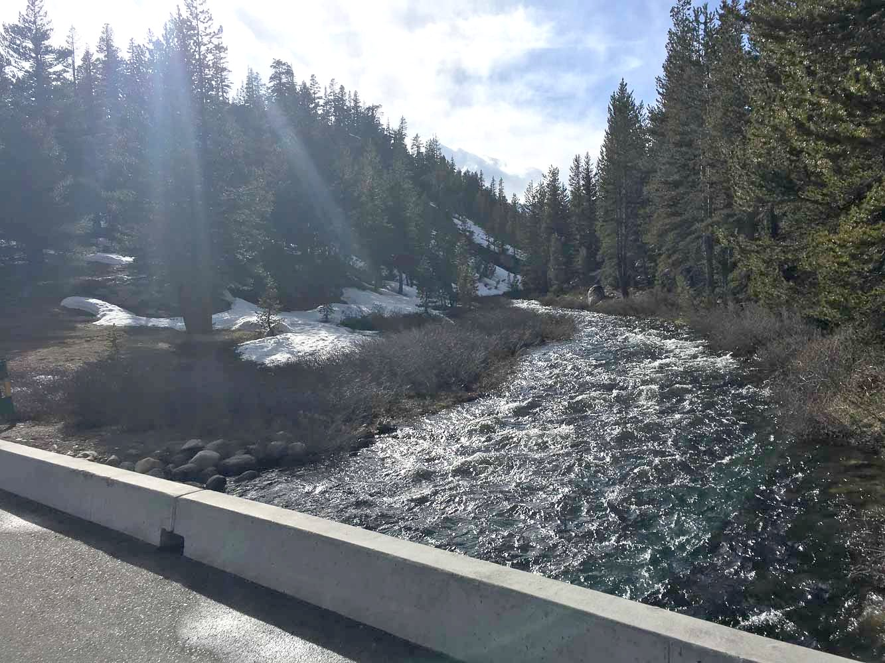
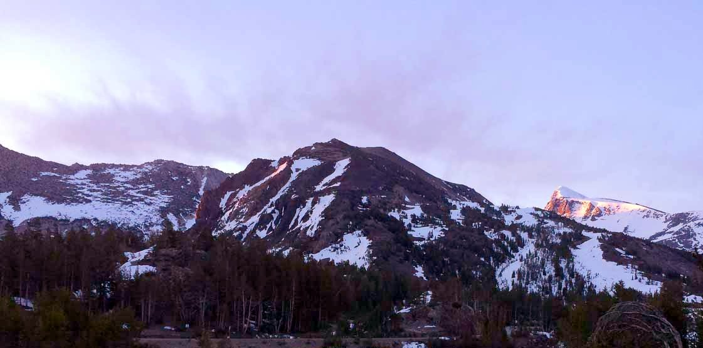
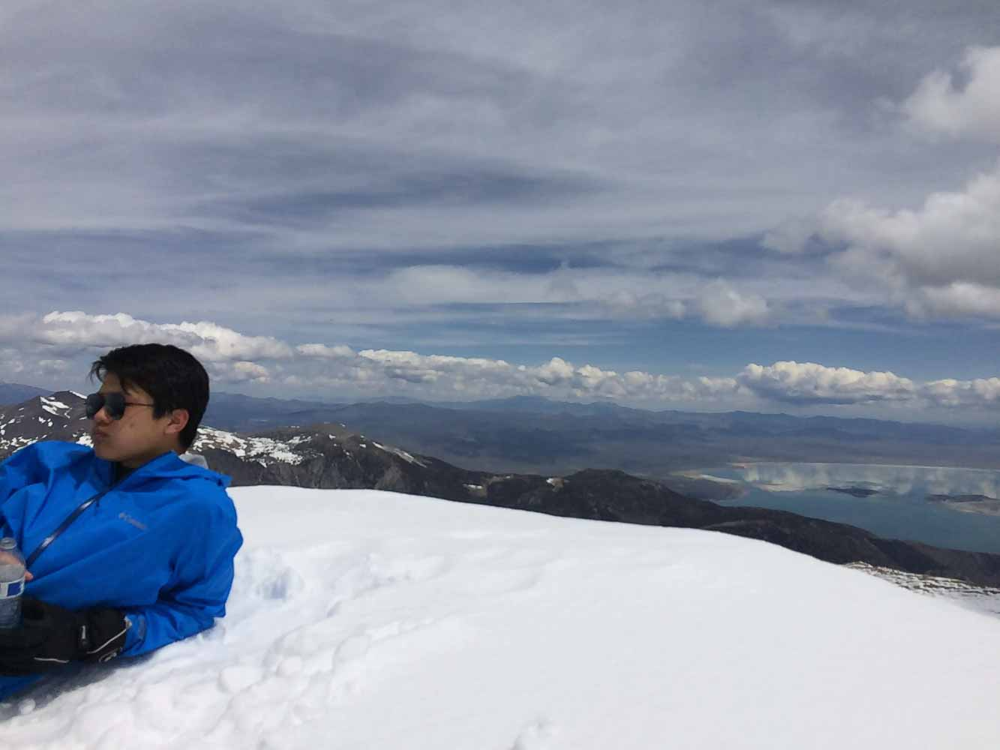

Mt. Dana - May 2019
This was a practice trip for our Mt. Shasta summit attempt in a month's time. Richard and his dad came along, and we were very lucky to have his dad there to drive us and climb with us! Got some good time on the snow with Becky (my ice axe).
We drove over there on the Saturday (via 108 which was open) and camped at the junction of Saddlebag Lake Road and Tioga Road. Just for fun, we drove the extra 3 miles to the pass, and we found this very nice drawing at the toll booth!

{kind=link}

{kind=link}
It was pretty cold that night and I forgot to bring extra socks (noob mistake honestly). The next morning, all the snow was really hard, and we were happy and cold!

{kind=link}
Mt. Dana in sunrise
We drove to Tioga pass and started. The initial section had a lot of trees, and as we all know, tree+snow is like death pretty much. Fortunately, the snow was really hard and we didn't have too much trouble getting through to the slopes. (This would not be true on the return, when the afternoon sun had thawed out the snow into powder. Honestly have never felt so close to death...) Once we were past tree line, the conditions were amazing! Hard snow made for fast travel (limited by our bad fitness).


After the first 1,500 feet, there's a nice flat area where you get the first view of the summit (which is so beautiful in the snow!) and Richard's dad had to stop there. Richard and I continued on to the summit. We met a nice (swiss?) couple coming down while we were going up. We followed in their footsteps because the snow was starting to get softer by the minute. By the time we reached the top, we were sinking about shin-deep in powder. Amazing winter views for my first Sierra summit! (Mono Lake in the background!)



{kind=link}
With Mono Lake
We glissaded most of the descent. Thrilling! The weird vibrations gave me a headache for some reason, and it got worse as we went down. We saw two skiiers plop down the Dana Couloir (they spent a long time just waiting around at the edge, must have had the stage fright!)... Getting down through the last section in the trees probably took longer than the actual ascent. My head was pounding so hard I couldn't even get out words towards the end. A pretty shitty end to an amazing climb! (Also my pants ripped because they're weak when they're wet?)

(don't get me started on the massive sunburn I had afterwards... face peeled like a(n) (orange, banana, apple))